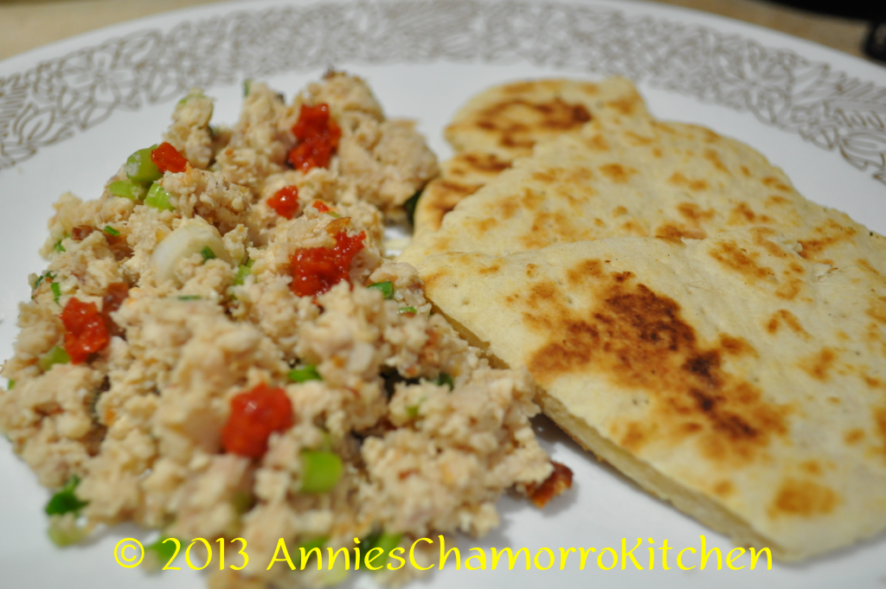

Chicken Kelaguen
Home

Description
Sweet, spicy, and sour. Goes perfectly with sweet flour titiyas!
Ingredients
- 1 small rotisserie chicken
- 6 stalks green onions
- 1 ½ tablespoons lemon powder plus 3 tablespoons water (or use the juice of 1 large lemon)
- 2 teaspoons salt (more or less, to taste)
- Hot pepper, optional
- Freshly grated coconut (unsweetened), optional
Steps
- Debone chicken; shred or cut into small pieces.
- Thinly slice the green onions then add it to the chicken.
- Add the lemon powder, water, salt and pepper to the bowl of chicken; mix to combine. Taste; adjust seasoning if required.
- Stir in the grates coconut (optional)
- Serve with sweet flour titiyas and enjoy!